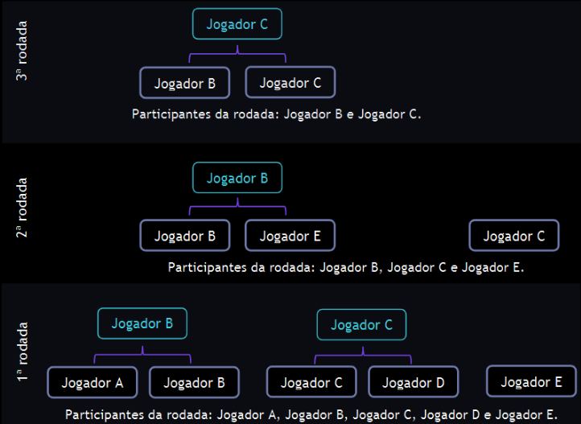
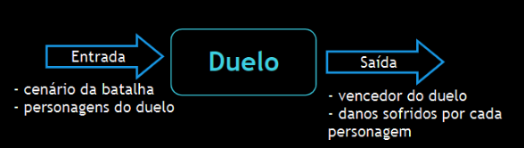
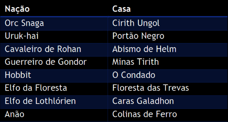

Jogabilidade e personagens
Jogabilidade
A batalha é realizada em um cenário fixo no qual podem ser alocados até oito
jogadores, sendo que só pode haver um personagem de cada nação. O cenário é fixo
porque a batalha inteira ocorre neste único cenário escolhido. Dentre os cenários
possíveis, o jogo pode definirqualquer uma das oito casasdas nações.
Não existem alianças e “amizades” entre os personagens, portanto eles se enfrentam em
duelos de um contra o outro em cada rodadae o vencedor avança para a próxima
rodada. No início da rodada, ospersonagens são distribuídosaleatoriamente em pares
para realizarem a batalhae, caso a quantidade de personagens na batalha seja
ímpar, um deles ficará fora da batalha e se classificará automaticamente para a
rodada seguinte.Os vencedores de uma rodada são novamente distribuídos aleatoriamente
para se enfrentarem em uma nova batalha. As rodadas são repetidas de acordo
com a quantidade restante de personagens na arena, até que ocorra a batalha
finale seja definido um personagem como o vencedor.O jogadorque “sobrou” na rodada
anterior não pode sobrar novamentena rodada seguinte. AFigura 1exemplifica um cenário
com cinco jogadores.

A batalha é realizada em turnos de duelosdiretos entre dois personagens, conforme foi
descrito anteriormente. Porém, é preciso descrever com mais detalhes como se deve determinar
o vencedor de cada duelo.
Antes, deve-se observar que um duelopossui como informações
de entrada:o cenário da batalhaeos dois personagens do confrontocom as suas
características. Após o confronto, a informação de saída é o vencedordo confrontocom
os danos que sofreue infringiu.Em outras palavras, conforme explicita a Figura 2, é
preciso saber explicar o que ocorreu no duelo.

O confronto ocorre em turnosno qual cada personagem faz uma jogada que pode serataque,
defesaou movimentação em direção ao adversário.
O ataqueé o golpe desferido pelo personagem no adversário.O golpe possui uma
probabilidade de atingir o adversárioe essa probabilidade é calculada de
acordo com a sua habilidadenaquele tipo de ataque. O ataquepode serdo tipo:
- ataque curto é oataque no qual o jogador está entre zero e um passo de distância do
adversário; e
- ataque longo é o ataque no qual o jogador está entre dois e dez passos de distância.
Considera-se que o ataque atingiu o adversário se eleestiver dentro do raio de ação dos tipos
de ataques previstos. Portanto, não é possível realizar ataque em distância superior
a dez passos.Caso o ataque atinja o adversário, o dano causado será calculado com base nos
fatores: habilidade do personagem no tipo de ataque desferido, habilidade do adversário em
realizar a defesa, se o adversário está realizando a defesa e bônus ou penalidades causadaspelo
cenário da batalha.
Adefesa é a ação que o personagem realiza para se proteger e reduzir os danos causados por golpes
que podem ser desferidos pelo adversário. A defesa possui uma probabilidade de reduzir o
dano do ataque e essa probabilidade é calculada de acordo com a sua habilidadenaquele tipo de
ataque. A defesa pode serdo tipo:
- defesa curta éaquela que visa proteger o personagem do ataque curto desferido pelo
adversário; e
- defesa longa é aquela que visa proteger o personagem do ataque longo desferido
pelo adversário
Considera-se que foi realizada a defesa se a ação do personagemé de defesa e se o adversário
deferiu algum golpe contra ele.Caso ocorra a defesa, a redução do dano causado deve
consideraro tipo de ataque recebido, habilidade do adversário no tipo de ataque desferido, a
capacidade do personagem em realizar a defesa e bônus ou penalidades causadas pelo
cenário da batalha.
Movimentação: é o avanço do personagem na arena do confronto.Esse avanço se dá um passo por
vez até que não existam mais passos entre o personagem e o adversário.
Personagens e o cenário
O jogo de batalha entre personagens baseados na Terra-Média que é o mundo do Senhor dos
Anéis. A batalha ocorrepor turnos de forma automáticano formato de todos contra todos,
considerando as características dos personagens. Cadapersonagem é de uma naçãoe possui 5
habilidades, conforme descrito a seguir.
As habilidadesque os personagens possuem são força, velocidade, precisão, armadurae
recuperação. Além da nacionalidade e das 5 habilidades, o personagem possui seus pontos
de energia e um nome para identificá-lo ao longo de suas interações no jogo. No início
do jogo, o personagem possui 100 pontosde energia e outros 100 pontos de
habilidadesque devem ser distribuídos entre as habilidades da forma que o jogador
preferir.
- Força: a capacidade que o personagem possui de infringir danos no adversário no combate
a curta distância;
- Precisão: a precisão denota a capacidade na qual o personagem tem para infringir danos
no adversário à longa distância;
- Velocidade: o tempo no qualo personagem leva para se aproximar do adversário;
- Armadura: o quanto reduz o impacto dos ataques do adversário, independente da distância
na qual os ataques são realizados;
- Recuperação: a capacidade de recuperar pontos para a próxima batalha.
Neste jogo, foram selecionadas as seguintes naçõesda Terra-Média:Orc
Snaga,Uruk-hai,Cavaleirode Rohan, Guerreiro de Gondor, Hobbit, Elfo da Floresta, Elfo de
Lothlórien e anão.A casa de cada nação é, respectivamente, Cirith Ungol, Portão Negro, Abismo
de Helm, Minas Tirith, OCondado, Floresta das Trevas ou Mirkwood, Caras Galadhon ou Cidade
das Árvorese Colinas de Ferro.A Tabela 1descrevea ligação entre cada nação e a sua casa

Cursos de TI Estácio de Brasília em 2022
Todos os direitos reservados.
(Terra-Média, locais e personagens são direitos de Tolkien Enterprises)